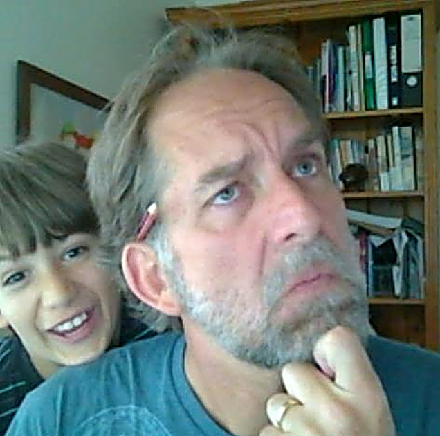

Who's writing
I'm a writer and postgraduate student in the humanities, working across criticism and creative non-fiction.
My interests run through philosophy and psychology, and my prose leans toward the lyric - rhythm, image, and the felt precision of the line. I'm drawn to the essayists and hybrid writers who make the tension between thinking and feeling into the work itself: Barthes, Maggie Nelson, James Wood, William Gass.
Right now I'm studying the pathways to publication - traditional, digital, and community - and building the habit of putting work into the world rather than keeping it in a drawer.
